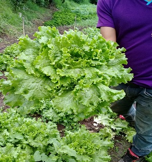

Zuquini
Cucurbita pepo es el nombre científico de una especie de plantas cucurbitáceas originaria de Mesoamérica y sur de Estados Unidos, que junto con otras especies emparentadas (Cucurbita maxima, C. moschata, C. argyrosperma) forman un grupo de especies de calabazas cuyas variedades cultivadas, de las que se cosecha su fruto maduro o inmaduro, poseen usos culinarios indistinguibles (son los zapallos, calabacines, zapallitos, auyamas, ahuyamas, pipianes, ayotes, etc).

Perejil
El perejil (Petroselinum crispum) es una planta herbácea de la familia Apiaceae. Se distribuye ampliamente por todo el mundo y generalmente se cultiva para ser usada como condimento.
Se encuentra naturalizado en huertos, jardines y a veces en márgenes de caminos, muros, cultivos, etc. de toda Europa y en parte de Asia. También se encuentra aclimatado en zonas templadas de América.

Lechugas
La Lactuca sativa, conocida comúnmente como lechuga, es una especie de planta herbácea propia de las regiones semitempladas que se cultiva con fines alimentarios. Debido a las muchas variedades que existen y a su cultivo cada vez mayor en invernaderos, se puede consumir durante todo el año. Normalmente se toma cruda, como ingrediente de ensaladas y otros platos, pero ciertas variedades, sobre todo las de origen chino, poseen una textura más robusta y por ello se emplean cocidas.
Papas
La papa o patata (Solanum tuberosum) es una especie de planta herbácea perteneciente al género Solanum de la familia de las solanáceas, originaria de la región que hoy comprendería al altiplano sur del Perú1 y al noroeste de Bolivia.2 Fue domesticada en el altiplano andino y en las cercanías del lago Titicaca por los habitantes de esta región desde hace unos 8000 años.34 En el siglo XVI comenzó a ser trasladada a Europa por los conquistadores españoles quienes la consideraban una curiosidad botánica y no una planta alimenticia. Su consumo fue creciendo y su cultivo se expandió a todo el mundo hasta convertirse hoy día en uno de los principales alimentos del ser humano.

Rabanos
Raphanus sativus, el rábano, es una especie de planta del género Raphanus en la familia Brassicaceae que se cultiva por sus raíces comestibles.
Observación: El género podría concebirse como constituido por una sola especie, Raphanus raphanistrum, muy polimorfa, de la que habría surgido, por domesticación, el rábano cultivado (Raphanus sativus) que, aquí, sí se considera una especie1 aunque no esté reconocida aún como tal, y su validez sujeta a revisión.

Chayotes
La chayotera (Sechium edule) o guatila es una cucurbitácea cuyo fruto (chayote,2 papa del aire,2 chuchu, güisquil,3 erizo,2 cidra, en algunas partes de Colombia,4 entre varios otros nombres) es de amplio uso como hortaliza.
La especie Sechium edule es una trepadora perenne, monoica y vivípara de tallos aristados y lisos, hasta de 15 m de largo, muy ramificados. Los tallos tienen cordones de fibras largas y fuertes, los bejucos crecen de una cepa permanente y duran de uno a dos años.